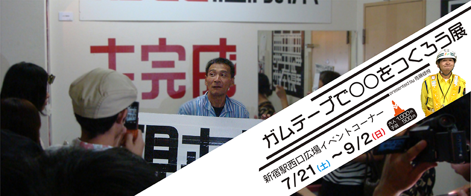
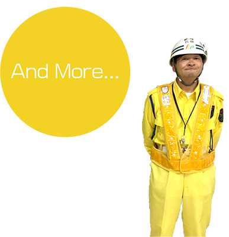

2004年JR新宿駅での改装工事。そこで警備員として駅利用者の案内をしていた三和警備保障株式会社所属の佐藤修悦さんが目にしたのは、利用路線がわからず迷い困っている多くの駅利用者でした。案内を求める利用者が多く、声や手振りだけでの誘導では対応できません。そこで、佐藤修悦さんは現場にあったガムテープを活用して駅構内の案内表示を即興で作りました。こうして生まれたガムテープ文字の「修悦体」は、評判を呼び、映画の題字やロゴにも使われることになりました。

展示内容
ワークショップ
ガムテープで文字を書こう
ワークショップ
オリジナルガムテープを作ろう


2004年JR新宿駅での改装工事で警備員として駅利用者の案内をしていた佐藤修悦さんが生んだ、ガムテープを活用した駅構内の案内表示。そんな「修悦体」が生まれた新宿駅を出発して、首都圏を一周し新宿駅に戻ってくるという普段では絶対に通らない運行ルートをお座敷列車で運行します。